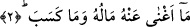

künye yoktur. Kur’ân’da onun Abdü’l-Uzzâ olan ismi zikredilmemiştir. Çünkü Uzzâ, put
ismiydi. Böyle bir put ismine izâfeten isim koymak ve kullanmak şer‘an haramdır.”
Bu görüşte hatâ vardır: Zîrâ haram olan, böyle bir ismi koymaktır, yoksa önceden
verilmiş olan ismi kullanmak değil. Bazıları “Böyle isimleri kullanmak da harâmdır,
ancak kişi bu isimle meşhur olmuşsa o zaman haram olmaz. A‘meş gibi kişinin görme
kusûrunu bildiren sıfatlar gibi” der.
Bu sûre indikten sonra hiç bir mü’min, Ebû Leheb’in cehennemlik olduğu hususunda
şüphe etmez. Başkası için aynı hüküm geçerli değildir.
Bu sûrede Rasûlullah (s.a.) Efendimiz’e, “De ki: Eli kurusun…” denilmemiştir. Bu,
Efendimiz (s.a.) amcasına karşı hakâret etmiş ve ağır konuşmuş olmasın diyedir. Her ne
kadar amcası ona hakâret etse bile… Çünkü amca tıpkı baba gibi hürmete lâyıktır. Bir
de O, âlemlere rahmet olarak gönderilmiştir ve büyük bir ahlâk üzeredir. Bu sebeple
O’nun yerine Ebû Leheb’e Allah Teâlâ cevap vermiştir.
Bu âyet “Ebî leheb” değil de “Ebû Leheb” şeklinde de okunmuştur. Bunun Arapçada
örnekleri de vardır: “Ali b. Ebû Talib”, “Muâviye b. Ebû Süfyân” ifâdelerinde yer alan
“Ebû” kelimeleri gibi. Hâlbuki kâide, muzâfun ileyh olduğu için “Ebî” şeklinde
olmasıdır. Kelimenin bu şekilde Ebû Leheb okunması, kelimede bir değişiklik
yapıldığında onu işiten kimsenin bir müşkil var zannetmemesi içindir. Kısacası, künye
özel isim mesâbesindedir. Özel isimler ise hiçbir hâlde değişikliğe uğramaz. Mekke
emîrlerinden birinin iki çocuğu vardı. Birinin ismi Abdillah, diğerininki ise Abdellah
idi.
2. Malı ve kazandıkları ona fayda vermedi.
Yâni başına helâk geldiği zaman bunlar onu def’edemedi ve aslâ fayda vermedi. Bu
mânâ, “mâ”nın nâfiye olumsuzluk mânâsına alınması durumundadır. Onu soru edatı
olarak almak da mümkündür. Bu takdirde âyetin mânâsı: “Onu ne kurtardı?” olur. O
zaman buradaki soru, “inkârî” olur. Veya mef‘ûl-i mutlak olarak “Hangi kurtarış onu
kurtardı” mânâsına gelir.
Malından maksad, malının aslı ve onunla kazandığı kâr, mahsul, menfaat, şeref ve
taraftarlardır. Kârûn’dan daha zengin kimse yoktu, ama malı onu ölümden de azaptan da
koruyamadı. Süleyman (a.s.)’dan daha büyük bir hükümdar yoktur, ama O’nun için de
şöyle denmiştir:
Gece gündüz Süleyman (a.s.)’ın tahtı
Rüzgâr üzerinde gezmez miydi?
Görmedin mi sonunda ne oldu? Tâcı tahtı yele verdi.
İyi olan kimse odur ki ilim ve adâletle buradan göçer gider.